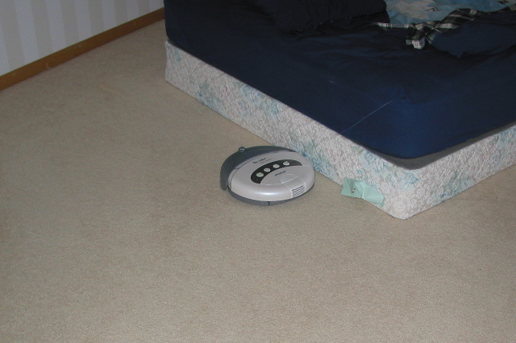

I was doing ok, really. Looking at the various models, comparing specs and the like. Then I saw it, and I knew. This was how I would vacuum. It was the only way. Roomba. Right there on the self. I resisted at first. I mean really, how good was it really? Never mind the stairs. I reasoned with myself, wondering aimlessly around the store for a good thirty or more minutes. Finally, I figured I'd run home quick, read some reviews, convince myself it wasn't really what I needed, and get a real vacuum.
So I ran home quick. I looked up reviews. And some more reviews. And looked at a few more just in case. Then b-lined to the store. I must have it. It was by no means perfect. But it did as good as any other it seemed, minus the stairs.
So I have a Roomba. Yeah, never mind the stairs. I'll think of something, really. Later. In the mean time, it is bumping about my bedroom, pulling up most everything. Watching it for a bit, you can see that it is a little bit more than just bump-n-go, a little bit less than building full internal maps. All of it is just plain neatness.
I am such a geek.
I wonder how I'm gonna vacuum the stairs...
